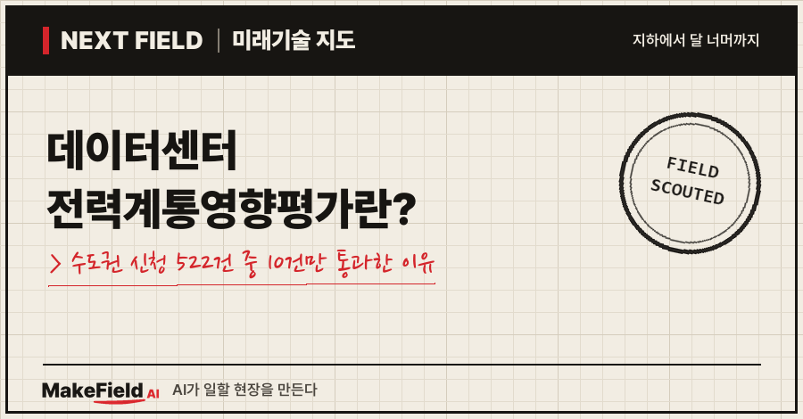
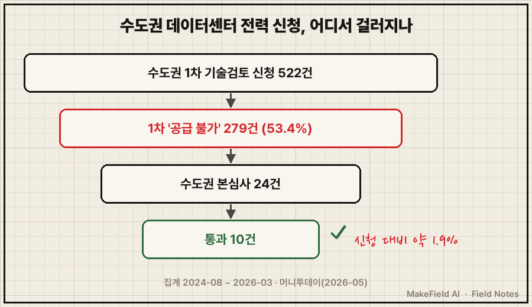
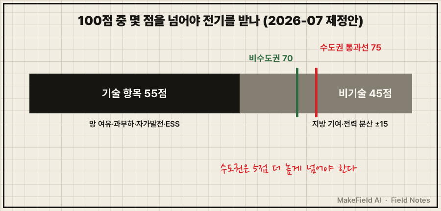
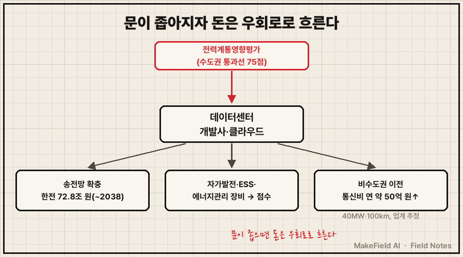

한국에서 데이터센터를 지으려면 땅과 돈보다 먼저 넘어야 하는 문이 있어요. 한전 전력망에 전기를 연결해도 되는지 미리 심사받는 '데이터센터 전력계통영향평가'입니다.
한 줄 요약: 전력계통영향평가는 10MW 이상 전기를 쓰려는 시설이 전력망에 무리를 주는지 미리 따지는 심사이고, 2024년 8월부터 2026년 3월까지 수도권 데이터센터 신청 522건 가운데 본심사를 통과한 곳은 10건, 약 1.9%였어요(머니투데이 2026-05). 이코노미스트도 2026년 10월 같은 10건·1.9%를 보도하며 이 문을 AI 데이터센터의 '첫 장벽'으로 꼽았습니다(이코노미스트 2026-10).
이 글은 2026년 10월 기준 공개 자료로 이 심사가 무엇인지, 왜 이렇게 좁아졌는지, 그 사이에서 돈이 어디로 흐르는지 차례로 풀어 봅니다.
1. 전력계통영향평가란 무엇인가요
전력계통영향평가란 대상 지역에서 계약전력 10MW 이상을 쓰려는 사업자가 전기를 받기 전에, 그 전기가 주변 전력망에 주는 부담을 점수로 평가받는 제도다. 근거 법은 2024년 6월 14일 시행된 「분산에너지 활성화 특별법」이에요(김앤장 법률사무소 2026-07).
💡 MW(메가와트) — 전력의 크기 단위. 1MW는 1,000kW다. 가정 한 집이 3kW를 쓴다고 치면 10MW는 약 3,300가구가 한꺼번에 쓰는 전기(단순 계산).
💡 전력망(전력계통) — 발전소에서 만든 전기를 송전선·변전소를 거쳐 소비자까지 보내는 길 전체. 고속도로망에 비유하면, 발전소는 공장이고 송전선은 고속도로다.
비유하면 이래요. 대형 쇼핑몰을 지으려면 주변 도로가 늘어날 차를 감당하는지 교통영향평가를 받죠. 전력계통영향평가는 그 '전기판'입니다. 다만 차가 아니라 전기가, 도로가 아니라 송전선과 변전소가 심사 대상이에요.
💡 계약전력 — 한전과 "최대 이만큼까지 쓰겠다"고 약속한 전력의 크기. 데이터센터는 이 숫자가 수십~수백 MW에 이른다.
2. 데이터센터 전력계통영향평가는 왜 통과가 어려운가요
전기 수요는 수도권에 몰리는데, 그 수요를 실어 나를 송전망 공사가 수년씩 밀려 있기 때문이다. 숫자로 보면 병목이 분명해요.

| 단계(수도권) | 건수 | 출처 |
|---|---|---|
| 1차 기술검토 신청 | 522건(전국 736건의 71%) | 머니투데이 2026-05 |
| 1차에서 '공급 불가' | 279건(53.4%) | 머니투데이 2026-05 |
| 본심사 | 24건 | 머니투데이 2026-05 |
| 본심사 통과 | 10건(신청 대비 약 1.9%) | 머니투데이 2026-05, 이코노미스트 2026-10 |
그림을 글로 정리하면, 수도권 신청 522건 중 절반이 넘는 279건이 1차에서 '공급 불가' 판정을 받았고, 본심사까지 간 24건 중 10건만 통과했어요. 같은 기사는 전국 공급 불가 306건 가운데 91.2%가 수도권이었다고 전합니다(머니투데이 2026-05). 집계 시작 시점은 매체마다 표기가 달라, 이 글은 기간을 날짜까지 밝힌 머니투데이 기준을 따랐어요.
수요가 몰리는 속도도 가팔라요. 데이터센터 계약전력 신청량은 2020년 이전 약 60MW에서 2023년 3,091MW로 3년 새 50배 이상 늘었습니다(머니투데이 2026-05). 산업통상자원부 집계로는 2029년까지 신규 데이터센터 732곳이 약 49.4GW를 원하고, 그 80% 이상이 수도권에 몰릴 것으로 예상돼요(이코노미스트 2026-10).
💡 GW(기가와트) — 1GW는 1,000MW. 대형 원전 1기가 대략 1GW라서, 49.4GW는 원전 약 50기분 출력이다(단순 계산).
반면 길은 늦게 뚫려요. 제11차 전력수급기본계획에 반영된 송전망 사업 54개 중 약 20개가 지연됐고, 동해안~동서울 HVDC는 완공 목표가 2019년에서 2027년 이후로 밀렸습니다(이코노미스트 2026-10).
💡 HVDC(초고압 직류 송전) — 멀리 떨어진 발전소의 전기를 수십만 볼트 직류로 보내는 송전 방식. 전기용 '고속도로 직통 노선'이다.
AI가 기름을 부었어요. 같은 기사에 따르면 일반 데이터센터 서버 선반 하나는 5~10kW를 쓰지만 AI 데이터센터는 40~100kW 이상이고, 한 곳의 수전 용량도 과거 20~30MW에서 100MW 이상으로 커졌습니다(이코노미스트 2026-10). 세계로 넓혀 봐도 국제에너지기구(IEA)는 2025년 데이터센터 전력 수요가 17% 늘었고 2030년까지 두 배가 될 것으로 봤어요(W.Media 2026-04, IEA 보고서 인용).
💡 IEA(국제에너지기구) — 각국 정부가 함께 만든 에너지 분석 국제기구. 데이터센터 전력 전망의 기준 자료로 가장 많이 인용된다.
3. 무엇을 보고 점수를 매기나요
2026년 7월 공개된 운영규정 제정안은 100점 만점 중 기술 항목 55점, 비기술 항목 45점으로 평가하고, 데이터센터 통과선은 수도권 75점·비수도권 70점이다. 기후에너지환경부가 2026년 7월 9일 공고한 제정안 기준이에요(김앤장 법률사무소 2026-07). 머니투데이는 2026년 5월 기준 이 제도가 "법정 고시 없이 2년째 시범 운영 중"이라고 썼습니다(머니투데이 2026-05). 이 글을 쓰는 2026년 10월까지 제정안이 최종 확정됐는지는 공개 자료로 확인하지 못했어요.
| 구분 | 배점 | 무엇을 보나(제정안) |
|---|---|---|
| 기술 항목 | 55점 | 전력망 여유 용량, 과부하 증가, 공급 확보 난이도, 자가발전·ESS·에너지관리시스템 같은 영향 최소화 방안 |
| 비기술 항목 | 45점 | 사업 안정성, 지방 재정 기여, 산업 효과, 정책 부합, 비수도권 부지 제공 가점, 전력 분산 효과(-15~+15점), 전력 사용 밀도 감점 |
| 통과선(데이터센터) | 수도권 75점 / 비수도권 70점 | 같은 시설이라도 수도권이 5점 더 높아야 통과 |
(출처: 김앤장 법률사무소 2026-07, 운영규정 제정안 별표 해설)
💡 ESS(에너지 저장 장치) — 대형 배터리 설비. 전기가 남을 때 모았다가 모자랄 때 내보내 전력망 부담을 덜어 준다.
💡 xEMS(에너지관리시스템) — 건물·공장의 전기 사용을 실시간으로 재고 조절하는 소프트웨어·장비의 통칭.

통과해도 끝이 아니에요. 제정안은 승인 뒤 자가발전 운영 계획과 ESS·에너지관리시스템 효율 계획을 지키도록 하고, 어기면 전력 신청·계약 정지나 과태료까지 갈 수 있게 했습니다(김앤장 법률사무소 2026-07).
4. 돈의 흐름 — 누가 내고 누가 받나요
심사의 문이 좁아지자 돈은 '전기를 더 들이는 쪽'과 '전기를 덜 끌어오는 쪽'으로 갈라져 흐르고 있다.

| 흐름 | 내는 쪽 | 받는 쪽(예시) | 확인된 숫자 |
|---|---|---|---|
| 송전망 확충 | 한전(결국 전기요금) | 송전선·변전소 건설·전력기기 업계 | 2024~2038년 송변전 설비에 72조 8,000억 원 필요, 10차 계획보다 16조 3,000억 원 증가(뉴시스 2025-05) |
| 점수 확보용 설비 | 데이터센터 사업자 | 자가발전·ESS·에너지관리 장비 공급사 | 제정안이 이 설비들을 기술 항목 '영향 최소화 방안'으로 평가(김앤장 법률사무소 2026-07). 시장 규모는 확인 못 함 |
| 지방 이전 | 데이터센터 사업자 | 통신 사업자, 비수도권 지자체 | 40MW 데이터센터를 수도권에서 약 100km 옮기면 통신 회선비가 연 약 50억 원 늘어남(이코노미스트 2026-10, 업계 추정) |
| 장기 전력 계약 | 빅테크 | 발전사 | 해외 사례로 마이크로소프트–콘스텔레이션 20년 계약(스리마일섬 원전 835MW), 아마존–탈렌에너지 2042년까지 최대 1,920MW(이코노미스트 2026-10) |
💡 PPA(전력구매계약) — 전기를 쓰는 기업이 발전사와 "몇 년 동안 얼마에 이만큼 사겠다"고 직접 맺는 장기 계약.
표에서 읽을 것은 두 가지예요. 첫째, 가장 큰 돈은 송전망 그 자체에 묶여 있어요. 한전은 2038년까지 72조 8,000억 원이 필요하다고 봤는데, 원인으로 자재비 상승과 땅속 송전선 증가를 들었습니다(뉴시스 2025-05). 둘째, 심사 점수가 곧 설비 수요가 돼요. 자가발전·ESS·에너지관리 장비를 갖출수록 점수를 얻는 구조라, 사업자는 전기를 덜 끌어오는 설비에 먼저 돈을 쓰게 됩니다(추정).
※ 위 기업명과 수치는 산업 구조를 설명하기 위한 예시입니다. 특정 종목의 매수·매도를 권하는 글이 아닙니다.
5. 정부는 어떻게 움직이나요 — AIDC 특별법
2026년 5월 국회를 통과한 AI 데이터센터(AIDC) 특별법은 2027년 3월 시행 예정이고, 요건을 갖춘 비수도권 AI 데이터센터에 전력계통영향평가를 면제할 근거를 담았다. 인허가가 정해진 기간을 넘기면 진행되도록 하는 '타임아웃제'도 들어갔어요(이코노미스트 2026-10).
💡 AIDC 특별법 — AI 데이터센터(AIDC)의 인허가·전력 공급을 빠르게 해 주고 지방 분산을 유도하려는 특별법.
💡 타임아웃제 — 행정기관이 정해진 기한 안에 답하지 않으면 다음 절차로 넘어가게 하는 장치.
정리하면 정부의 방향은 '수도권은 문을 좁히고, 지방은 문을 넓힌다'예요. 운영규정 제정안의 높은 수도권 통과선(75점)과 비수도권 부지 가점, 특별법의 비수도권 면제가 모두 같은 쪽을 가리킵니다.
6. 언제 풀리나요, 한계는 무엇인가요
송전망 공사가 따라잡기 전까지 수도권의 문은 좁게 유지될 가능성이 크고, 지방 이전에는 지연 시간과 통신비라는 반대 근거가 있다.
- 수요는 수도권에 남는다: AI 추론 서비스는 응답 지연을 줄이려 수도권 가까이에 있어야 한다는 업계 설명이 있어요(머니투데이 2026-05). 법이 지방을 밀어도 수요는 쉽게 옮겨 가지 않을 수 있습니다.
- 비용이 늘어난다: 앞서 본 통신 회선비 연 약 50억 원(40MW 기준, 업계 추정)은 지방 이전의 실제 비용이에요(이코노미스트 2026-10).
- 전기만으로는 안 된다: 전기를 확보해도 자금·임차인·운영 구조가 맞아야 사업이 된다는 지적도 있어요(머니투데이 2026-05).
- 규칙이 아직 확정 전이다: 운영규정은 2026년 7월 제정안 단계였고, 특별법 세부 요건은 2027년 3월 시행에 맞춰 구체화돼야 합니다. 점수표와 면제 요건은 바뀔 수 있어요.
- 송전망은 몇 년 단위다: 지연된 송전망 사업이 약 20개에 이르는 만큼(이코노미스트 2026-10), 단기간에 수도권 통과율이 크게 오르긴 어렵다고 보는 편이 자연스럽습니다(추정).
자주 묻는 질문
Q. 전력계통영향평가는 데이터센터만 받나요?
아니요. 대상 지역에서 10MW 이상 전기를 쓰려는 사업자 전체가 대상이에요(김앤장 법률사무소 2026-07). 다만 전기를 대량으로 쓰는 데이터센터가 신청의 중심이 되면서 가장 크게 영향을 받고 있습니다.
Q. 수도권과 비수도권은 기준이 다른가요?
2026년 7월 제정안 기준으로 데이터센터 통과선은 수도권 75점, 비수도권 70점이에요(김앤장 법률사무소 2026-07). 비수도권 부지 제공에는 가점도 있습니다.
Q. AIDC 특별법이 시행되면 심사가 없어지나요?
요건을 갖춘 비수도권 AI 데이터센터에 한해 면제 근거가 생기는 것이에요. 2027년 3월 시행 예정이고, 수도권 데이터센터는 여전히 평가를 받아야 합니다(이코노미스트 2026-10).
오늘의 용어 정리
- 전력계통영향평가 — 10MW 이상 전기를 쓰려는 시설이 전력망에 주는 부담을 미리 점수로 매기는 심사
- MW / GW — 전력 크기 단위(1GW=1,000MW, 원전 1기 약 1GW)
- 전력망(전력계통) — 발전소에서 소비자까지 전기가 가는 길 전체
- 계약전력 — 한전과 약속한 최대 사용 전력
- HVDC — 먼 거리를 직류로 보내는 초고압 송전
- IEA — 국제에너지기구
- ESS — 전기를 모았다 내보내는 대형 배터리 설비
- xEMS — 건물·공장의 전기 사용을 재고 조절하는 에너지관리시스템
- PPA — 기업과 발전사가 직접 맺는 장기 전력구매계약
- AIDC 특별법 — AI 데이터센터 인허가·전력 공급 특례법(2027년 3월 시행 예정)
- 타임아웃제 — 기한이 지나면 다음 절차로 넘어가게 하는 장치
지난 Next Field에서 데이터센터 '건물 안' 전기를 800V 직류로 바꾸는 이야기와 변압기 부족 문제를 봤다면, 오늘은 그보다 앞선 '건물 밖' 문을 따라가 봤어요. 송전망 공사와 지방 이전 중 어느 쪽이 먼저 이 문을 넓힐까요?
출처
[1] 이코노미스트(2026-10) — AI 데이터센터 첫 장벽 '전력망': 신청 736건 중 수도권 522건(71%), 최종 공급 가능 10건(1.9%), 2029년 신규 수요 732곳·약 49.4GW(80% 이상 수도권), 송전망 사업 54개 중 약 20개 지연, 동해안~동서울 HVDC 2019년→2027년 이후, 선반 전력 5~10kW→40~100kW 이상, 수전 용량 20~30MW→100MW 이상, AIDC 특별법 2026-05 통과·2027-03 시행 예정, 통신 회선비 연 약 50억 원(업계 추정), 빅테크 원전 PPA 사례
→ https://economist.co.kr/article/view/ecn202609280034
[2] 머니투데이(2026-05) — 데이터센터 삼중고: 집계 2024-08-01~2026-03-27, 1차 기술검토 736건 중 수도권 522건, 수도권 공급 불가 279건(53.4%), 전국 공급 불가 중 수도권 91.2%, 수도권 본심사 24건 중 10건 통과, 수도권 성공률 1.9%, 신청량 약 60MW→3,091MW, 법정 고시 없이 2년째 시범 운영, 업계 발언
→ https://www.mt.co.kr/tech/2026/05/20/2026051922000848265
[3] 김앤장 법률사무소(2026-07) — 전력계통영향평가 운영규정 제정안(2026-07-09 공고): 분산에너지법(2024-06-14 시행) 근거, 10MW 이상 대상, 기술 55점·비기술 45점, 데이터센터 통과선 수도권 75점·비수도권 70점, 승인 후 의무와 제재
→ https://www.kimchang.com/ko/insights/detail.kc?idx=35319
[4] 뉴시스(2025-05) — 한전 제11차 장기 송변전설비계획: 2024~2038년 72조 8,000억 원 필요, 10차 대비 16조 3,000억 원 증가, 원인은 자재비 상승·지중 송전선 증가
→ https://mobile.newsis.com/view/NISX20250527_0003191486
[5] W.Media(2026-04) — IEA 보고서 인용: 2025년 데이터센터 전력 수요 17% 증가, 2030년까지 두 배 전망
→ https://w.media/data-center-power-demand-will-double-by-2030-iea/